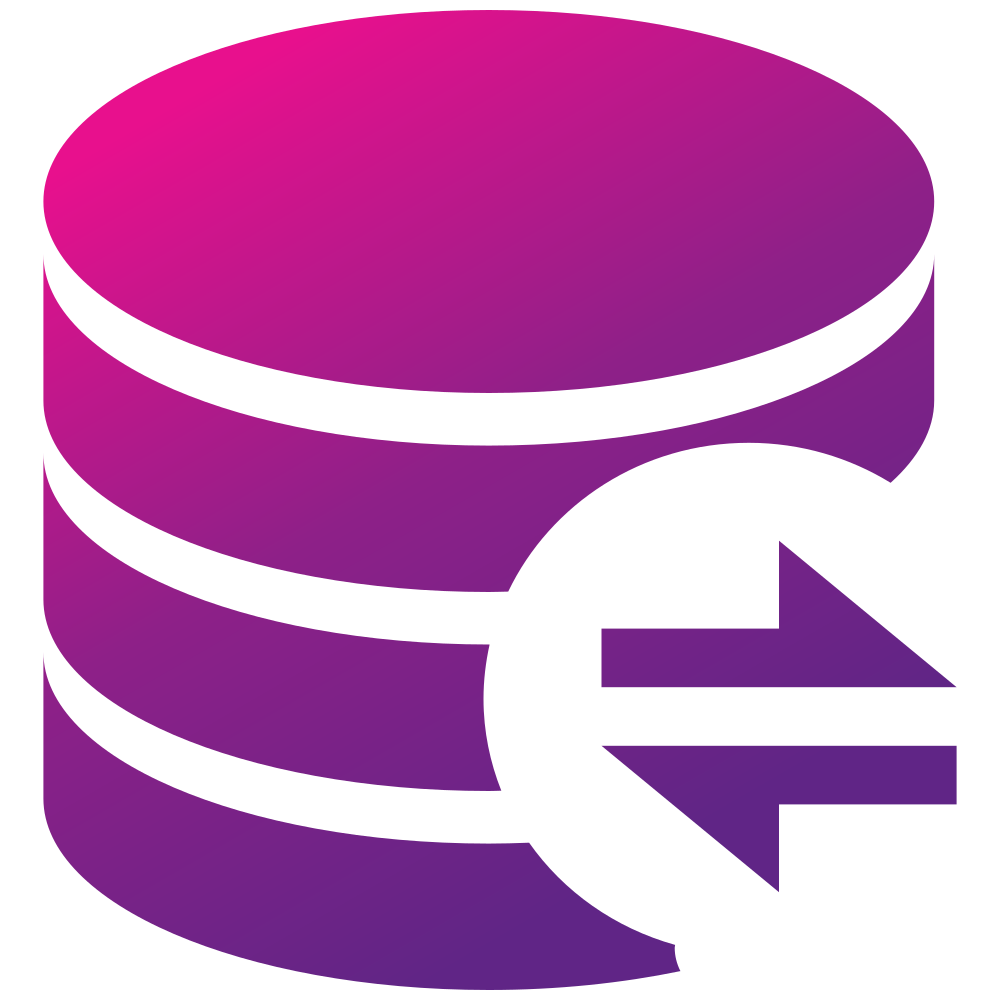

HTTP Replication from a custom server to RxDB clients
While RxDB has a range of backend-specific replication plugins (like GraphQL or Firestore), the replication is build in a way to make it very easy to replicate data from a custom server to RxDB clients.

Using HTTP as a transport protocol makes it simple to create a compatible backend on top of your existing infrastructure. For events that must be sent from the server to the client, we can use Server Send Events.
In this tutorial we will implement a HTTP replication between an RxDB client and a MongoDB express server. You can adapt this for any other backend database technology like PostgreSQL or even a non-Node.js server like go or java.
To create a compatible server for replication, we will start a server and implement the correct HTTP routes and replication handlers. We need a push-handler, a pull-handler and for the ongoing changes pull.stream we use Server Send Events.
Setup
Start the Replication on the RxDB Client
RxDB does not have a specific HTTP-replication plugin because the replication primitives plugin is simple enough to start a HTTP replication on top of it.
We import the replicateRxCollection function and start the replication from there for a single RxCollection.
// > client.ts
import { replicateRxCollection } from 'rxdb/plugins/replication';
const replicationState = await replicateRxCollection({
collection: myRxCollection,
replicationIdentifier: 'my-http-replication',
push: { /* add settings from below */ },
pull: { /* add settings from below */ }
});
Start a Node.js process with Express and MongoDB
On the server side, we start an express server that has a MongoDB connection and serves the HTTP requests of the client.
// > server.ts
import { MongoClient } from 'mongodb';
import express from 'express';
const mongoClient = new MongoClient('mongodb://localhost:27017/');
const mongoConnection = await mongoClient.connect();
const mongoDatabase = mongoConnection.db('myDatabase');
const mongoCollection = await mongoDatabase.collection('myDocs');
const app = express();
app.use(express.json());
/* ... add routes from below */
app.listen(80, () => {
console.log(`Example app listening on port 80`)
});
Implement the Pull Endpoint
As first HTTP Endpoint, we need to implement the pull handler. This is used by the RxDB replication to fetch all documents writes that happened after a given checkpoint.
The checkpoint format is not determined by RxDB, instead the server can use any type of changepoint that can be used to iterate across document writes. Here we will just use a unix timestamp updatedAt and a string id which is the most common used format.
When the pull endpoint is called, the server responds with an array of document data based on the given checkpoint and a new checkpoint. Also the server has to respect the batchSize so that RxDB knows when there are no more new documents and the server returns a non-full array.
// > server.ts
import { lastOfArray } from 'rxdb/plugins/core';
app.get('/pull', (req, res) => {
const id = req.query.id;
const updatedAt = parseFloat(req.query.updatedAt);
const documents = await mongoCollection.find({
$or: [
/**
* Notice that we have to compare the updatedAt AND the id field
* because the updateAt field is not unique and when two documents
* have the same updateAt, we can still "sort" them by their id.
*/
{
updateAt: { $gt: updatedAt }
},
{
updateAt: { $eq: updatedAt }
id: { $gt: id }
}
]
})
.sort({updateAt: 1, id: 1})
.limit(parseInt(req.query.batchSize, 10)).toArray();
const newCheckpoint = documents.length === 0 ? { id, updatedAt } : {
id: lastOfArray(documents).id,
updatedAt: lastOfArray(documents).updatedAt
};
res.setHeader('Content-Type', 'application/json');
res.end(JSON.stringify({ documents, checkpoint: newCheckpoint }));
});
Implement the Pull Handler
On the client we add the pull.handler to the replication setting. The handler request the correct server url and fetches the documents.
// > client.ts
const replicationState = await replicateRxCollection({
/* ... */
pull: {
async handler(checkpointOrNull, batchSize){
const updatedAt = checkpointOrNull ? checkpointOrNull.updatedAt : 0;
const id = checkpointOrNull ? checkpointOrNull.id : '';
const response = await fetch(
`https://localhost/pull?updatedAt=${updatedAt}&id=${id}&limit=${batchSize}`
);
const data = await response.json();
return {
documents: data.documents,
checkpoint: data.checkpoint
};
}
}
/* ... */
});
Implement the Push Endpoint
To send client side writes to the server, we have to implement the push.handler. It gets an array of change rows as input and has to return only the conflicting documents that did not have been written to the server. Each change row contains a newDocumentState and an optional assumedMasterState.
For conflict detection, on the server we first have to detect if the assumedMasterState is correct for each row. If yes, we have to write the new document state to the database, otherwise we have to return the "real" master state in the conflict array.
The server also creates an event that is emitted to the pullStream$ which is later used in the pull.stream$.
// > server.ts
import { lastOfArray } from 'rxdb/plugins/core';
import { Subject } from 'rxjs';
// used in the pull.stream$ below
let lastEventId = 0;
const pullStream$ = new Subject();
app.get('/push', (req, res) => {
const changeRows = req.body;
const conflicts = [];
const event = {
id: lastEventId++,
documents: [],
checkpoint: null
};
for(const changeRow of changeRows){
const realMasterState = mongoCollection.findOne({id: changeRow.newDocumentState.id});
if(
realMasterState && !changeRow.assumedMasterState ||
(
realMasterState && changeRow.assumedMasterState &&
/*
* For simplicity we detect conflicts on the server by only compare the updateAt value.
* In reality you might want to do a more complex check or do a deep-equal comparison.
*/
realMasterState.updatedAt !== changeRow.assumedMasterState.updatedAt
)
) {
// we have a conflict
conflicts.push(realMasterState);
} else {
// no conflict -> write the document
mongoCollection.updateOne(
{id: changeRow.newDocumentState.id},
changeRow.newDocumentState
);
event.documents.push(changeRow.newDocumentState);
event.checkpoint = { id: changeRow.newDocumentState.id, updatedAt: changeRow.newDocumentState.updatedAt };
}
}
if(event.documents.length > 0){
myPullStream$.next(event);
}
res.setHeader('Content-Type', 'application/json');
res.end(JSON.stringify(conflicts));
});
For simplicity in this tutorial, we do not use transactions. In reality you should run the full push function inside of a MongoDB transaction to ensure that no other process can mix up the document state while the writes are processed. Also you should call batch operations on MongoDB instead of running the operations for each change row.
Implement the Push Handler
With the push endpoint in place, we can add a push.handler to the replication settings on the client.
// > client.ts
const replicationState = await replicateRxCollection({
/* ... */
push: {
async handler(changeRows){
const rawResponse = await fetch('https://localhost/push', {
method: 'POST',
headers: {
'Accept': 'application/json',
'Content-Type': 'application/json'
},
body: JSON.stringify(changeRows)
});
const conflictsArray = await rawResponse.json();
return conflictsArray;
}
}
/* ... */
});
Implement the pullStream$ Endpoint
While the normal pull handler is used when the replication is in iteration mode, we also need a stream of ongoing changes when the replication is in event observation mode. This brings the realtime replication to RxDB where changes on the server or on a client will directly get propagated to the other instances.
On the server we have to implement the pullStream route and emit the events. We use the pullStream$ observable from above to fetch all ongoing events and respond them to the client. Here we use Server-End-Events which is the most common used way to stream data from the server to the client. Other method also exist like WebSockets or Long-Polling.
// > server.ts
app.get('/pullStream', (req, res) => {
res.writeHead(200, {
'Content-Type': 'text/event-stream',
'Connection': 'keep-alive',
'Cache-Control': 'no-cache'
});
const subscription = pullStream$.subscribe(event => {
res.write('data: ' + JSON.stringify(event) + '\n\n');
});
req.on('close', () => subscription.unsubscribe());
});
How the build the pullStream$ Observable is not part of this tutorial. This heavily depends on your backend and infrastructure. Likely you have to observe the MongoDB event stream.
Implement the pullStream$ Handler
From the client we can observe this endpoint and create a pull.stream$ observable that emits all events that are send from the server to the client.
The client connects to an url and receives server-sent-events that contain all ongoing writes.
// > client.ts
import { Subject } from 'rxjs';
const myPullStream$ = new Subject();
const eventSource = new EventSource(
'http://localhost/pullStream',
{ withCredentials: true }
);
eventSource.onmessage = event => {
const eventData = JSON.parse(event.data);
myPullStream$.next({
documents: eventData.documents,
checkpoint: eventData.checkpoint
});
};
const replicationState = await replicateRxCollection({
/* ... */
pull: {
/* ... */
stream$: myPullStream$.asObservable()
}
/* ... */
});
pullStream$ RESYNC flag
In case the client looses the connection, the EventSource will automatically reconnect but there might have been some changes that have been missed out in the meantime. The replication has to be informed that it might have missed events by emitting a RESYNC flag from the pull.stream$.
The replication will then catch up by switching to the iteration mode until it is in sync with the server again.
// > client.ts
eventSource.onerror = () => myPullStream$.next('RESYNC');
The purpose of the RESYNC flag is to tell the client that "something might have changed" and then the client can react on that information without having to run operations in an interval.
If your backend is not capable of emitting the actual documents and checkpoint in the pull stream, you could just map all events to the RESYNC flag. This would make the replication work with a slight performance drawback:
// > client.ts
import { Subject } from 'rxjs';
const myPullStream$ = new Subject();
const eventSource = new EventSource(
'http://localhost/pullStream',
{ withCredentials: true }
);
eventSource.onmessage = () => myPullStream$.next('RESYNC');
const replicationState = await replicateRxCollection({
pull: {
stream$: myPullStream$.asObservable()
}
});
Missing implementation details
In this tutorial we only covered the basics of doing a HTTP replication between RxDB clients and a server. We did not cover the following aspects of the implementation:
- Authentication: To authenticate the client on the server, you might want to send authentication headers with the HTTP requests
- Skip events on the
pull.stream$for the client that caused the changes to improve performance. - Version upgrades: You should add a version-flag to the endpoint urls. If you then update the version of your endpoints in any way, your old endpoints should emit a
Code 426to outdated clients so that they can updated their client version.